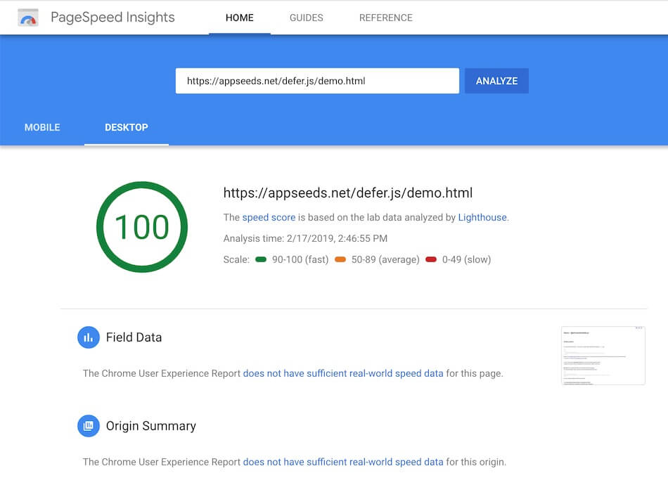
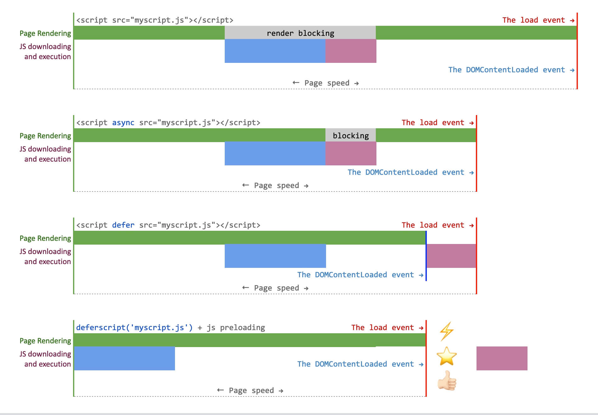

🥇 A super tiny, native performant library for lazy-loading JS, CSS, images, iframes... Defer almost anything, easily speed up your website.



In real life, many JavaScript libraries, such as JQuery, are used to enhance the page to add additional interactivity, animations, and other effects. Unfortunately, the third-party script was blocking the load of all the further resources of the page.
According to a Google PageSpeed Insights article:
The loading and execution of scripts that are not necessary for the initial page render may be deferred until after the initial render or other critical parts of the page have finished loading. Doing so can help reduce resource contention and improve performance.
There is a common knowledge that you should use <script src=".." async defer> (or set script.async = true before assigning src, when you do it from JS) and/or put your scripts at the very bottom of the page, so that as much as possible of the page gets loaded and rendered to the user, as fast as possible.

If your page is just an HTML page enhanced with some JavaScript, then you're good with just <script async>. It takes time for browser to parse and execute those scripts, and each UI change may reflow your layout, make your load speed more slow, no one likes staring at a blank white page; users are impatient and will leave quickly.
In various cases, using async or defer does not deliver faster page speed than defer or deferscript does.
Other lazy loading libraries hook up to the scroll event on elements that need to be lazy loaded. This approach forces the browser to re-layout the page and it is painfully slow.
Here we are, defer.js is written in plain JavaScript, making lazy-loading more efficient and performant. This library is using the recently added Intersection Observer with tremendous native performance benefits.
srcset and sizes attributesAvailable in latest browsers. This library also works perfectly with Internet Explorer 9 and later.
You can load the library via CDN and include it right after the opening <head> tag of your page.
<head>
<title>My awesome page</title>
<script src="//cdn.jsdelivr.net/npm/@shinsenter/defer.js/dist/defer_plus.min.js"></script>
<!-- And other HTML tags from here -->
</head>
💡 Best practice: Because the minified version is super tiny (less than 1KB), you can inline its content directly into the HTML document and avoid the network request.
Or you can install defer.js package with npm:
npm install @shinsenter/defer.js
JavaScript executions, especially ones that trigger extensive visual changes, can stall application performance.
Delaying loading and executing most of the JavaScript on your site minimizes the time it slows down the page rendering process. Your site will get a higher score in website speed tests.
The easiest way to delay the execution of the existing <script> tags on your site is to modify the type attribute of the tag to deferjs (except the one which contains defer_plus.min.js or defer.min.js).
For example: if we have 2 script tags like this.
<script type="text/javascript">/* my inline script */</script>
<script type="text/javascript" src="path/to/my/script.js"></script>
Just change type="text/javascript" to type="deferjs", like this:
<script type="deferjs">/* my inline script */</script>
<script type="deferjs" src="path/to/my/script.js"></script>
Note: This method can only be used since version 1.1.5.
All you need to do now is just wrap all your code in defer() function.
<script type="text/javascript">
// This will defer showing an alert message after 2 seconds
defer(function() {
alert("This message is shown after 2 seconds after the 'load' event.");
}, 2000);
// Append a HTML content to the <body> tag using jQuery
defer(function () {
$('body').html('<p>Your awesome content</p>');
}, 500);
</script>
Or defer loading and execution of external scripts with deferscript() function.
<script type="text/javascript">
// Alternative way to lazy load Google Tag Manager script
deferscript('//www.googletagmanager.com/gtag/js?id=UA-34520609-2', 'google-tag', 500, function() {
// Run extra code right after the script has been loaded
(window.dataLayer = window.dataLayer || []).push('config', 'UA-34520609-2');
});
</script>
Along with lazied JavaScript, lazy-loading big CSS files of the document makes sense, because some times - on a slow connection - a user may wait for a maximum of 5 to 6 seconds loading your CSS files.
While the CSS files are loading, the website is still blank. When the browser takes up a lot of time to load your CSS files, the user may hit the back button! You just lost a potential subscriber.
Luckily, you can also defer you CSS files which your users may not need yet, like this:
<script type="text/javascript">
// This will lzay-load FontAwesome icons
deferstyle('//use.fontawesome.com/releases/v5.7.2/css/all.css', 'fontawesome-css', 1000);
</script>
In order to lazy-load your content, you must use some data- attributes instead of the actual attributes. See examples below.
💡 Best practice: To polyfill the native IntersectionObserver API in unsupporting browsers such as IE9, you may need to include below script right after the defer_plus.min.js.
<script src="//cdn.jsdelivr.net/npm/@shinsenter/defer.js/dist/defer_plus.min.js"></script>
<script>
deferscript('//cdn.jsdelivr.net/npm/@shinsenter/defer.js/dist/polyfill.min.js', 'polyfill-js', 1);
</script>
Put this script anywhere you want within the <body> tag:
<script>deferimg('img[data-src],picture,video,audio')</script>
<img alt="A lazy image" data-src="lazy.jpg">
<img alt="A lazy image" src="low-resolution.jpg" data-src="lazy.jpg">
<img alt="A lazy image"
data-src="lazy.jpg" data-sizes="100w"
data-srcset="lazy-360.jpg 360w, lazy-640.jpg 640w">
<picture>
<source type="image/webp" data-sizes="100w"
data-srcset="lazy-360.webp 360w, lazy-640.webp 640w">
<img alt="A lazy image"
data-src="lazy.jpg" data-sizes="100w"
data-srcset="lazy-360.jpg 360w, lazy-640.jpg 640w">
</picture>
<picture>
<source media="(min-width: 800px)"
data-srcset="lazy-800.jpg 1x, lazy-1600.jpg 2x">
<source media="(min-width: 640px)"
data-srcset="lazy-640.jpg 1x, lazy-1280.jpg 2x">
<img alt="A lazy image" data-src="lazy.jpg">
</picture>
<video class="lazy" controls width="720" data-src="lazy.mp4" poster="lazy.jpg">
<source type="video/mp4" data-src="lazy.mp4">
<source type="video/ogg" data-src="lazy.ogg">
<source type="video/avi" data-src="lazy.avi">
</video>
Put this script anywhere you want within the <body> tag:
<script>deferiframe('iframe[data-src],[data-style]')</script>
<iframe src="about:blank"
data-src="lazy-frame.html"
data-style="background: transparent url(lazy.jpg) 50% 50% / cover no-repeat;"></iframe>
<iframe src="about:blank"
data-src="https://www.youtube.com/embed/<youtube-video-id>"
data-style="background: transparent url(https://img.youtube.com/vi/<youtube-video-id>/hqdefault.jpg) 50% 50% / cover no-repeat;"
frameborder="0" width="560" height="315" allowfullscreen
allow="accelerometer; autoplay; encrypted-media; gyroscope; picture-in-picture"></iframe>
<iframe src="about:blank"
data-src="https://www.facebook.com/plugins/post.php?href=https%3A%2F%2Fwww.facebook.com%2Fappseeds%2Fposts%2F1502937099839267&width=500&show_text=true&height=500"
width="500" height="500"
data-style="border:none;overflow:hidden"
scrolling="no" frameborder="0" allowTransparency="true" allow="encrypted-media"></iframe>
If you only need the defer() and deferscript() functions for lazy-loading JavaScript, you can use a super-super compact version (under 500 bytes), as below:
<head>
<title>My awesome page</title>
<script src="//cdn.jsdelivr.net/npm/@shinsenter/defer.js/dist/defer.min.js"></script>
</head>
Yes, you can inline the whole script in your HTML document for better pagespeed performance.
The core concept is padding in percentages is based on width.
It is weird: padding-top and padding-bottom is based on an element's width. So if you had an padding-top of 56.25%, it happens to be a perfect 16:9 ratio! (9 / 16 = 0.5625). And with padding-top of 100%, we have a perfect square.
So we are going to make a set of CSS classes that supports common aspect ratios.
div.aspect {
margin: 0;
padding-top: 75%; /* default is 4:3 ratio */
max-width: 100%;
height: 0;
overflow: hidden;
position: relative;
}
div.aspect.wide {
padding-top: 56.25%;
}
div.aspect.square {
padding-top: 100%;
}
How do you put content inside if padding-top is pushing everything down?
We hid the content in the box with overflow: hidden, and we'll need an inside wrapper for the absolute positioning. Let's get specific with below CSS:
div.aspect > * {
display: block;
position: absolute;
left: 0;
top: 0;
width: 100%;
height: 100%;
object-fit: contain;
vertical-align: top;
z-index: 2;
}
Then we apply above CSS concepts to <img>, <video> and <iframe> tags to make them fluid width while maintaining their unique aspect ratios.
<!-- Here is another image with 4:3 ratio -->
<div class="aspect">
<img alt="A lazy image" data-src="lazy.jpg">
</div>
<!-- And this will be a video with 16:9 ratio -->
<div class="aspect wide">
<video class="lazy" controls data-src="lazy.mp4" poster="lazy.jpg">
<source type="video/mp4" data-src="lazy.mp4">
<source type="video/ogg" data-src="lazy.ogg">
<source type="video/avi" data-src="lazy.avi">
</video>
</div>
<!-- Or even a Youtube video in a iframe -->
<div class="aspect wide">
<iframe src="about:blank"
data-src="https://www.youtube.com/embed/<youtube-video-id>"
frameborder="0" allowfullscreen
allow="accelerometer; autoplay; encrypted-media; gyroscope; picture-in-picture"></iframe>
</div>
We can add a simple effect to our images when it is completely loaded.
In this example, we are going to add a fade-in effect to image and iframe tags that have fade class name. it can be done like this:
<style type="text/css">
/* hide the element with opacity is set to 0 */
.fade {
transition: opacity 500ms ease-in-out;
opacity: 0;
}
/* show it with the 'shown' class */
.fade.shown {
opacity: 1;
background: 0 0;
}
</style>
<script type="text/javascript">
// We define a callback function
// to add a 'shown' class into the element when it is loaded
var media_loaded = function (media) {
media.className += ' shown';
}
// Then call the deferimg and deferiframe methods
deferimg('img.fade', 300, 'lazied', media_loaded);
deferiframe('iframe.fade', 300, 'lazied', media_loaded);
</script>
<!-- Simple <img> tag with 'fade' class -->
<div class="fade aspect">
<img alt="A lazy image" data-src="lazy.jpg">
</div>
<!-- I added a placeholder background image in the <div> tag -->
<div class="fade aspect wide"
data-style="background: transparent url(https://img.youtube.com/vi/<youtube-video-id>/hqdefault.jpg) 50% 50% / cover no-repeat;">
<iframe src="about:blank"
data-src="https://www.youtube.com/embed/<youtube-video-id>"
frameborder="0" allowfullscreen
allow="accelerometer; autoplay; encrypted-media; gyroscope; picture-in-picture"></iframe>
</div>
This is the section where you can find detailed usage of each method of defer.js.
Keep calm and defer everything you want. Let's go!
defer(func [, delay ])
This is our hero: the defer function.
This will push your function func into queue with its delay time.
If browser's load event was fired, your function will be executed.
| Argument | Type | Description |
|---|---|---|
| func | Function | The function to be deferred. |
| delay | Integer | (Optional) The delay time to start executing the function (in miliseconds). Default: 80. |
deferscript(src [, id [, delay [, callback ]]])
This function will lazy-load a script from given URL in src argument.
The tag id and delay time can be set in id and delay arguments.
Sometimes you may call a callback function when the file is loaded.
| Argument | Type | Description |
|---|---|---|
| src | String | The URL of .js file. |
| id | String or false |
(Optional) The id attribute of the <script> tag. |
| delay | Integer | (Optional) The delay time to start download and executing the .js file (in miliseconds). Default: 80. |
| callback | Function | (Optional) The callback function after the .js file is loaded and executed. |
deferstyle(src, id [, delay [, callback ]])
This function will lazy-load stylesheet from given URL in src argument.
The tag id and delay time can be set in id and delay arguments.
Sometimes you may call a callback function when the file is loaded.
| Argument | Type | Description |
|---|---|---|
| src | String | The URL of .css file. |
| id | String or false |
(Optional) The id attribute of the <link> tag. |
| delay | Integer | (Optional) The delay time to start download and parsing the .css file (in miliseconds). Default: 80. |
| callback | Function | (Optional) The callback function after the .css file is loaded and executed. |
deferimg(query_selector [, delay [, load_class [, callback ]]])
| Argument | Type | Description |
|---|---|---|
| query_selector | String | The query selctor. Default: 'img.lazy'. |
| delay | Integer | (Optional) The delay time to trigger lazy-load on the image (in miliseconds). Default: 80. |
| load_class | String | (Optional) The class name when the image is swapped its real src. Default: 'lazied'. |
| callback | Function | (Optional) The callback function when the image is loaded. |
| options | Object | (Optional) Intersection observer options. |
✅ The this in callback is a reference to the target <img> DOM element.
deferiframe(query_selector [, delay [, load_class [, callback ]]])
| Argument | Type | Description |
|---|---|---|
| query_selector | String | The query selctor. Default: 'iframe.lazy'. |
| delay | Integer | (Optional) The delay time to trigger lazy-load on the iframe (in miliseconds). Default: 80. |
| load_class | String | (Optional) The class name when the iframe is swapped its real src. Default: 'lazied'. |
| callback | Function | (Optional) The callback function when the iframe is loaded. |
| options | Object | (Optional) Intersection observer options. |
✅ The this in callback is a reference to the target <iframe> DOM element.
I am build other awesome extensions to integrate defer.js to your websites.
defer.php is a PHP helper class for your PHP website (compatible with Laravel, CodeIgniter...).
WordPress remains one of the most popular CMS platform until now. This is a WordPress plugin. Hope you guys like it.
You can view full demo of using defer.js at below link.
https://appseeds.net/defer.js/demo.html
✅ See Google Pagespeed Insights test result here.


Released under the MIT license. https://appseeds.net/defer.js/LICENSE
Copyright (c) 2019 Mai Nhut Tan <shin@shin.company>.
From Vietnam 🇻🇳 with love.